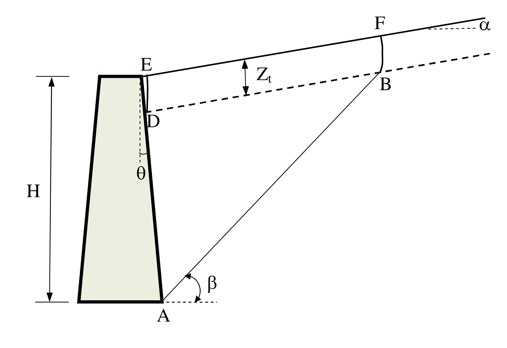
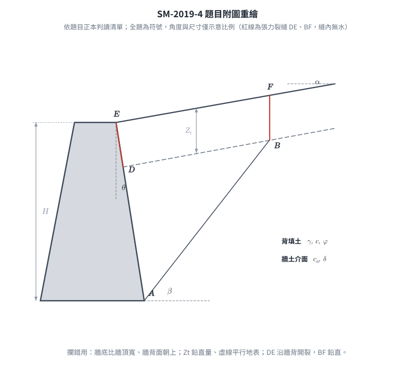
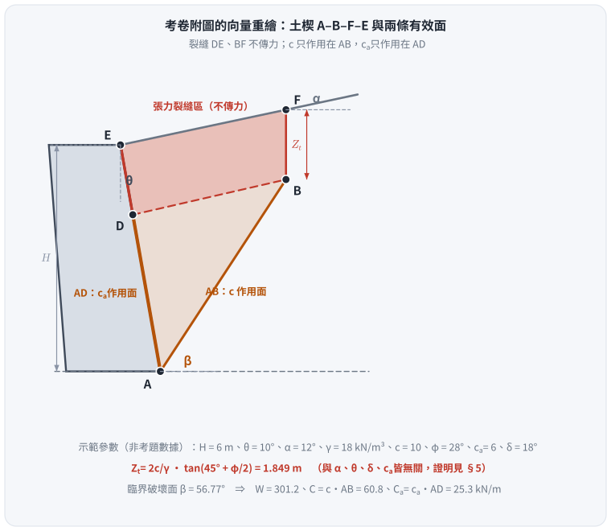
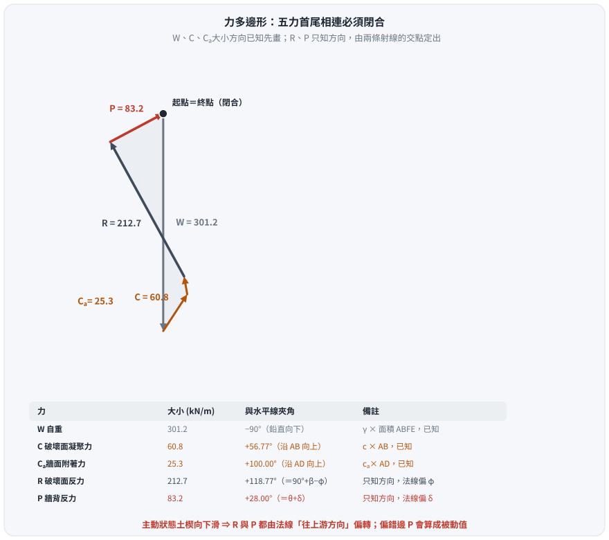
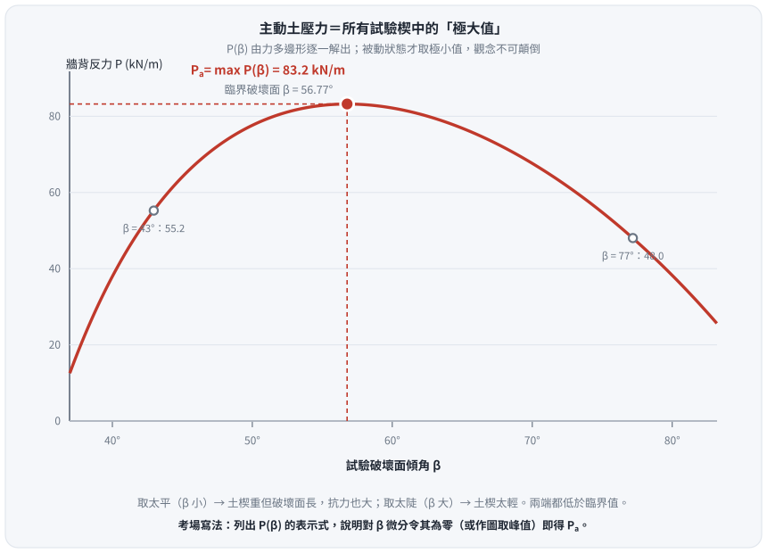

📄 題目正本：考卷原文・附圖・判讀清單（已確認）
SM-2019-4 題目正本
本檔只記錄考卷上寫了什麼、圖上畫了什麼，不含任何解法。解析見同資料夾
SM-2019-4.md。
判讀清單已確認（凍結）；本檔原則上不再修改（改動須回考卷原圖並記 log）。
| 項目 | 內容 |
|---|---|
| 考卷 | raw/exams/SM-2019_土壤力學與基礎設計.pdf 第 3 頁（頁次 3－3），第四題 |
| 考年 | 民國 108 年（2019） |
| 配分 | 25 分（㈠ 5、㈡ 15、㈢ 5） |
| 附圖 | SM-2019-4-fig-2.png（擋土牆與庫倫破壞土楔；2026-11-15 由考卷重新擷取 500 dpi）；既有 SM-2019-4-fig-1.png 為同一圖，滑鼠游標壓在牆趾 A 的 β 角弧上，保留不刪 |
| 判讀狀態 | 已確認（2026-11-15 關卡一：使用者授權依建議判讀確認；轉錄 2026-11-15；PyMuPDF 110 dpi 全頁目視，附圖 400 dpi 放大並讀 PDF 向量座標；PDF 文字層核對；盲讀後才比對既有解析） |
1. 考卷原文（逐字）
四、某擋土牆如下圖所示，背填土坡度角 α，土壤單位重 γ，土壤凝聚力與摩擦角分別為 c 與 φ，牆背與鉛直線夾 θ 角，土壤與牆面間的凝聚力與摩擦角分別為 $c_a$ 與 δ。考慮張力裂縫（線段 DE 與 BF），但縫內無水，並假設主動狀態之破壞面（線段 AB）與水平線夾 β 角。
㈠試求張力裂縫的最大深度 $Z_t$。（5 分）
㈡畫出以庫倫（Coulomb）法求解主動狀態時作用於破壞土楔的力多邊形。答案需描述各已知力的計算及各力與水平或鉛直線的夾角。（15 分）
㈢如何求得作用於牆背的主動推力。（5 分）
2. 考卷給的公式、附表與參數
- 全為符號：牆高 $H$；背填土坡度角 $\alpha$；土壤 $\gamma$、$c$、$\phi$；牆背與鉛直線夾角 $\theta$；牆土介面 $c_a$、$\delta$；破壞面 AB 與水平夾角 $\beta$；張力裂縫深度 $Z_t$。
- 張力裂縫 DE（牆背側）與 BF（破壞面頂端），縫內無水。
- 沒有給：任何數值；地下水（題意為無水）；地表超載。
- 卷首注意事項：㈠可以使用電子計算器。㈡不必抄題，作答時請將試題題號及答案依照順序寫在試卷上，於本試題上作答者，不予計分。㈢本科目除專門名詞或數理公式外，應使用本國文字作答。
3. 附圖

圖面文字照錄：H、A、β、B、Zt、E、D、F、θ、α。
4. 判讀清單
| # | 項目 | 判讀 | 圖上／題文依據 | 把握 |
|---|---|---|---|---|
| 1 | 牆背傾斜方向 | 牆背由牆頂 E 往下向背填土側（右）偏，牆底比牆頂寬，牆背面朝上方、背填土壓在牆背上；θ 由鉛直虛線量到牆背 | 附圖 400 dpi：牆背上端 x ≈ 497 px、下端 A x ≈ 570 px；θ 弧在鉛直虛線與牆背之間 | 確定 |
| 2 | 裂縫 DE 的位置 | 沿牆背（牆土介面）開裂，D 在牆背上、深 $Z_t$；DE 段牆面無 $c_a$、無土壓 | 附圖 DE 畫成緊貼牆背的細線，E 在牆頂、D 在牆背上 | 確定（解讀） |
| 3 | $Z_t$ 的量法 | 由地表鉛直量到虛線；虛線平行地表（同坡 α） | 附圖 Zt 箭頭鉛直；地表與虛線斜率 0.169／0.171 | 確定 |
| 4 | 裂縫 BF | 鉛直，由破壞面頂點 B 到地表 F | 附圖 | 確定 |
| 5 | 破壞面 AB | 平面，由牆踵 A（牆背底）起、與水平線夾 β | 附圖 β 角在 A 點水平虛線與 AB 之間 | 確定 |
| 6 | 牆高 H | 由牆頂（E 高程）鉛直量到牆底 A 高程 | 附圖左側尺寸線上下端對齊牆頂與牆底 | 確定 |
| 7 | 地表 | 由牆頂 E 起以坡角 α 向上，牆頂與填土面在 E 交會 | 附圖 | 確定 |
| 8 | 縫內無水 | 張力裂縫內不計水壓 | 題文 | 確定 |
| 9 | 所求 | ㈠ $Z_t$ 最大深度；㈡ 庫倫法破壞土楔力多邊形（各已知力計算與夾角）；㈢ 主動推力求法 | 題文 | 確定 |
| 10 | 考卷沒有給 | 數值、地下水、超載 | 全題 | 確定 |
轉錄：2026-11-15（SM-U3-1 題目正本推廣・批 1）
確認：2026-11-15 使用者授權依建議判讀確認（SM-U3-1 題目正本推廣・批 1，關卡一；使用者指示「要確認的依你建議」）
考題編號：SM-2019-4
主分類： SM-U3-1 側向土壓力理論
副分類： 無
分析法： 概念題
標籤： Coulomb土壓力 主動土壓力 張力裂縫 力多邊形 試驗楔法 極大值原理 臨界破壞面
1. 題目（考卷原文見題目正本）
考卷原文、公式／附表、附圖與判讀清單（已確認）見
SM-2019-4-problem.md。本節只列解題時最容易讀錯的地方與本解使用的記號；題意以題目正本為準。

重繪自考卷附圖，依題目正本判讀清單 #1–#7（全題為符號，比例示意）；攔下的判讀錯誤：DE 沿牆背開裂而非鉛直縫，Zt 為鉛直深度。
常見誤讀
| 項目 | 正確判讀 | 常見誤讀 |
|---|---|---|
| 牆背傾向 | 牆背由牆頂 E 往下向背填土側偏 θ，牆背面朝上、背填土壓在牆背上（題目正本 #1） | 把 θ 畫成牆背向牆外傾 |
| 裂縫 DE | 沿牆背（牆土介面）開裂，D 在牆背上；DE 段無 $c_a$（#2） | 當成與牆背分開的鉛直裂縫 |
| $Z_t$ 量法 | 由地表鉛直量到平行地表的虛線（#3） | 沿坡面法向量 |
| 縫內無水 | 裂縫內不計水壓（#8） | 在裂縫加水壓 |
本解記號： $W$ 土楔重；$C=c\cdot\overline{AB}$；$C_a=c_a\cdot\overline{AD}$；$R$ 破壞面反力；$P_a$ 主動推力。
判讀圖解（解析自繪）

圖 1 土楔與兩條「還能傳力」的面（幾何依一組示範參數按比例繪出，非考題數據）。攔的是「把裂縫區的土從自重裡扣掉」——裂縫只讓 $c$、$c_a$ 失效，裂縫區 DEFB 的重量仍然壓在土楔上，必須計入 $W$；同時 $c$ 只乘 $\overline{AB}$、$c_a$ 只乘 $\overline{AD}$，不可用全長。
2. 考題核心精神與出題者意圖 (Core Concepts & Examiner's Intent)
本題旨在測驗考生對於庫倫（Coulomb）主動土壓力理論之深刻理解。有別於直接套用現成的公式，出題者透過加入張力裂縫（Tension Crack）以及複雜幾何（傾斜背填土、傾斜牆背），要求考生回歸土壓力理論的基本假設：
- 將破壞區視為剛體土楔。
- 進行靜力平衡分析（力多邊形閉合）。
- 尋找產生最大推力的臨界滑動面。
這測驗了考生是否具備推導極限平衡狀態的基礎能力，且對於張力裂縫處邊界條件（零抗拉強度、無水）的處理是否清晰。
3. 解題戰略地圖與陷阱分析 (Strategic Roadmap & Trap Analysis)
- 步驟一：確立張力裂縫深度
- 戰略：回歸應力狀態的觀念，在地表附近水平應力為零處即為裂縫臨界深度。
- 陷阱：勿死背傾斜地表面之複雜修正公式，以裂縫表面為垂直主應力面的基礎莫爾圓觀念推導最為穩妥。
- 步驟二：建構土楔受力圖（力多邊形）
- 戰略：識別土楔邊界為 A-B-F-E-D。因 DE、BF 為裂縫且無水，不產生作用力。作用力僅在土楔自重、AB面、AD面。
- 陷阱：各作用力與水平/鉛直線的夾角極易出錯。特別是反力 $R$ 與 $P$ 皆偏離法線一個摩擦角（$\phi$ 或 $\delta$），偏轉方向取決於滑動方向，需牢記主動狀態下「土楔向下滑，阻力皆向上」。
- 步驟三：推導主動土壓力
- 戰略：寫出極值條件。
- 陷阱：主動土壓力必須是所有可能破壞面中產生推力之極大值（$\max P$），被動土壓力才是極小值，觀念不可顛倒。
3.5 變數層次分析 (Variable Hierarchy Analysis)
最終目標
透過剛體土楔力平衡原理與極值分析，找出最大張力裂縫深度並描述作用力特徵，最終求得主動土壓力。
本題關鍵公式（依計算順序）
$$ Z_t = \frac{2c}{\gamma} \tan\left(45^\circ + \frac{\phi}{2}\right) $$
(由莫爾圓主應力關係求出張力裂縫深度)
$$ \sum F_x = 0, \quad \sum F_y = 0 \quad \Rightarrow \quad \vec{W} + \vec{C} + \vec{C_a} + \vec{R} + \vec{P} = 0 $$
(土楔力多邊形閉合，求解 P(\beta))
$$ P_a = \max_{\beta} P(\beta) $$
(庫倫主動土壓力之極值條件)
L1：題目直接給定
| 符號 | 數值 | 說明 |
|---|---|---|
| $\gamma$ | 給定 | 土壤單位重 |
| $c, \phi$ | 給定 | 破壞面土壤凝聚力與摩擦角 |
| $c_a, \delta$ | 給定 | 牆背土壤附著力與摩擦角 |
| $\alpha, \theta$ | 給定 | 背填土坡度角與牆背傾角 |
| $\beta$ | 給定 | 假設之破壞面夾角 |
L2：需知識點推導
力多邊形元素計算
| 符號 | 公式／來源 | 卡關? |
|---|---|---|
| $W$ | $\gamma \times \text{Area(ABFDE)}$ | |
| $C$ | $c \times \overline{AB}$ | |
| $C_a$ | $c_a \times \overline{AD}$ | |
| $Z_t$ | $\frac{2c}{\gamma}\tan(45^\circ+\frac{\phi}{2})$ | |
L3：深層知識（不懂就卡住）
| 知識點 | 說明 | 卡關? |
|---|---|---|
| 主動狀態摩擦力偏轉方向 | 土楔向下滑，故 $R$ 與 $P$ 皆偏離法線方向朝上（抵抗滑動） | |
| 極值搜尋觀念 | 主動狀態是讓擋土牆「最危險」的狀態，故 $P_a$ 必須是所有可能破壞面造成的推力極大值 |
4. 步驟化詳細計算過程 (Step-by-Step Detailed Calculation)
(一) 張力裂縫最大深度 $Z_t$
張力裂縫之產生，係因地表淺層土壤之側向有效應力轉為拉應力，而土壤本身無法承受拉伸所致。
在垂直張力裂縫之斷面上，水平方向不受拉力（應力為零），故為一主應力面，此處的水平最小主應力 $\sigma_3 = 0$。
對應的垂直最大主應力為土壤自重 $\sigma_1 = \gamma Z_t$。
代入莫爾-庫倫（Mohr-Coulomb）破壞準則公式：
$$ \sigma_1 = \sigma_3 \tan^2\left(45^\circ + \frac{\phi}{2}\right) + 2c \tan\left(45^\circ + \frac{\phi}{2}\right) $$
將 $\sigma_3 = 0$ 與 $\sigma_1 = \gamma Z_t$ 代入：
$$ \gamma Z_t = 2c \tan\left(45^\circ + \frac{\phi}{2}\right) $$
解得張力裂縫最大深度為：
$$ \boxed{ Z_t = \frac{2c}{\gamma} \tan\left(45^\circ + \frac{\phi}{2}\right) } $$
策略註解： 亦可表述為 $Z_t = \frac{2c}{\gamma \sqrt{K_a}}$（此處 $K_a = \tan^2(45^\circ - \phi/2)$ 為 Rankine 理論之主動土壓力係數），兩者數學與物理意義相同。
(二) 作用於破壞土楔的力多邊形
在邊界 DE 與 BF 皆發生張力裂縫，且內部無水（無水壓力），因此土楔 A-B-F-E-D 僅受到以下 5 個力的作用。
為繪製閉合之「力多邊形」，依靜力平衡條件可知此 5 力構成封閉迴圈，各力之大小與夾角特徵計算如下：
- 土楔自重 $W$ (已知力)
- 計算： $W = \gamma \times (\text{多邊形 ABFDE 之面積})$
- 夾角： 垂直向下作用（與鉛直線夾 $0^\circ$，或與水平線夾 $90^\circ$）。
- 破壞面 AB 上之凝聚力 $C$ (已知力)
- 計算： $C = c \times \overline{AB}$ （其中 $\overline{AB}$ 為扣除張力裂縫區後之有效破壞面長度）
- 夾角： 沿破壞面 AB 向上抵抗滑動，與水平線夾 $\beta$ 角。
- 牆背 AD 上之附著力 $C_a$ (已知力)
- 計算： $C_a = c_a \times \overline{AD}$ （其中 $\overline{AD}$ 為扣除裂縫後與牆面實際接觸長度）
- 夾角： 沿牆背 AD 向上抵抗滑動，因牆背與鉛直線夾 $\theta$ 角，故此力作用線與鉛直線夾 $\theta$ 角（斜向左上）。
- 破壞面 AB 上之反力 $R$ (大小未知，方向已知)
- 說明： 由正向力與摩擦力合成。
- 夾角： 主動狀態下土楔向下滑動，故摩擦力方向沿滑動面向上。合力 $R$ 會由破壞面法線方向逆著滑動方向偏轉 $\phi$ 角。因破壞面法線與鉛直線夾 $\beta$ 角，故 $R$ 作用線與鉛直線夾角為 $\beta - \phi$ （偏向左上）。
- 牆背作用於土楔之反力 $P$ (大小未知，方向已知)
- 說明： 由牆面正向力與牆面摩擦力合成（為求牆背推力之反作用力）。
- 夾角： 土楔相對於牆面向下滑動，牆面給予土楔之摩擦力沿牆面向上。合力 $P$ 由牆背法線方向向上偏轉 $\delta$ 角。因牆背法線與水平線夾 $\theta$ 角，故 $P$ 與水平線夾角為 $\theta + \delta$ （偏向右上）。
力多邊形繪製規則：
將上述五力以向量首尾相連（如 $W \rightarrow C \rightarrow C_a \rightarrow R \rightarrow P \rightarrow 回到起點$）。
三個已知力 $W$、$C$、$C_a$ 的大小與方向都能先算出，故先依序畫成一條折線；
剩下 $R$ 與 $P$ 只有方向已知、大小未知，分別由折線的末端與起點各拉一條已知斜率的射線，
兩線交點即同時定出 $R$ 與 $P$ 的大小，多邊形隨之閉合。
（力多邊形只反映 $\sum \vec{F} = 0$，各力並不共點；本題僅求推力大小，不需再取力矩平衡。）

圖 2 閉合的力多邊形（力的大小由示範參數的平衡方程解出，非考題數據）。攔的是 $R$、$P$ 的偏轉方向搞反——主動狀態土楔往下滑，兩個反力都要逆著滑動方向由法線偏出（$R$ 偏 $\phi$、$P$ 偏 $\delta$）；偏錯邊多邊形照樣能閉合，但解出來的是被動值。
(三) 如何求得作用於牆背的主動推力
利用上述庫倫試誤法（Trial Wedge Method）之觀念求得：
- 假設滑動面： 設定數個不同之滑動面傾角 $\beta_i$。
- 解算推力： 針對每一個假設的 $\beta_i$，依據上述第(二)小題之力多邊形閉合條件（$\sum F_x = 0$, $\sum F_y = 0$），解出維持該特定土楔平衡所需要的牆背反力 $P_i$。
- 取極值： 在主動狀態下，擋土牆必須能支撐所有可能發生滑動的土楔中，對牆背產生最大推力的那一個。因此，對於所有假設之 $\beta$ 所對應的 $P(\beta)$ 關係，取其極大值 (Maximum)，即為實際作用於牆背的主動推力 $P_a$。
$$ \boxed{ P_a = \max_{\beta} P(\beta) } $$

圖 3 $P(\beta)$ 的單峰形狀（曲線由力多邊形逐點解出，示範參數，非考題數據）。攔的是「主動取極小值」的觀念顛倒——曲線兩端都低於峰值，若誤取極小，$P_a$ 會被嚴重低估；被動狀態才是取 $\min$。
5. 關鍵爭議點與進階探討 (Critical Issues & Advanced Discussion)
- 破壞面形狀假設： 庫倫土壓力理論假設破壞面為平面（線段 AB），雖然在考慮牆面摩擦角 $\delta$ 時，真實破壞面下半部會略呈曲面（如對數螺旋面），但對主動狀態而言，平面假設之誤差極小（通常小於 10%），偏向保守且易於計算，為工程實務與考試所普遍採用。
-
⚠ 為什麼傾斜地表 $\alpha$ 不會改變 $Z_t$：
§4(一) 的推導是以「垂直面為主應力面」為前提，嚴格說只有 $\alpha = 0$ 才成立；
背填土傾斜時，平行地表的面上同時有正應力與剪應力（$\sigma_n = \gamma z\cos^2\alpha$、
$\tau = \gamma z \sin\alpha\cos\alpha$），並非主應力面。
但以無限邊坡的共軛應力狀態重解可以證明結果完全相同：
設莫爾圓心為 $s$、半徑 $r = c\cos\phi + s\sin\phi$（與強度包絡線相切），
代入通過 $(\sigma_n, \tau)$ 的條件得
$$s^2\cos^2\phi - 2s(\gamma z\cos^2\alpha + c\sin\phi\cos\phi) + \gamma^2z^2\cos^2\alpha - c^2\cos^2\phi = 0$$
裂縫發生的臨界條件是最小主應力歸零，即 $\sigma_3 = s - r = 0 \Rightarrow s = c\tan(45^\circ+\frac{\phi}{2})$。
把這個 $s$ 代回上式，常數項 $c^2\cos^2\phi\left[\tan^2(45^\circ+\frac{\phi}{2}) - 2\tan(45^\circ+\frac{\phi}{2})\tan\phi - 1\right]$
恆等於零，方程退化為 $\cos^2\alpha \cdot \gamma z\,(\gamma z - 2c\tan(45^\circ+\frac{\phi}{2})) = 0$，
故 $\gamma Z_t = 2c\tan(45^\circ+\frac{\phi}{2})$，與 $\alpha$ 無關。
這也解釋了題目附圖為何把 $Z_t$ 標成鉛直深度而不是沿坡面量：只有鉛直量法才有這個乾淨結果。
（注意 $Z_t$ 與 $\theta$、$\delta$、$c_a$ 皆無關——牆面條件不影響土體內部的拉應力分布。） -
張力裂縫之影響： 考慮張力裂縫後，不僅破壞面上半部（BF）喪失抗剪能力，牆背上半部（DE）亦無土壓力及附著力貢獻。若遇雨水滲入裂縫（本題註明無水），還需在力多邊形中額外加入裂縫內的靜水壓力推力，這將顯著增加擋土牆之受力，設計上須特別注重背填土表面排水。
解析日期：見 wiki/log.md ｜ 圖解補繪：2026-08-29（向量 SVG，程式繪製，腳本 gen_SM-2019-4.py 可重跑；同名 2× PNG 供簡報／影片管線使用）
修正日期：2026-11-15（§1 改為指向題目正本 SM-2019-4-problem.md，重繪附圖 figs/SM-2019-4-fig-1-problem.svg；舊 §1 解析自繪 figs/SM-2019-4-fig-1-geometry.svg 移至 §1 判讀圖解小節；非勘誤）